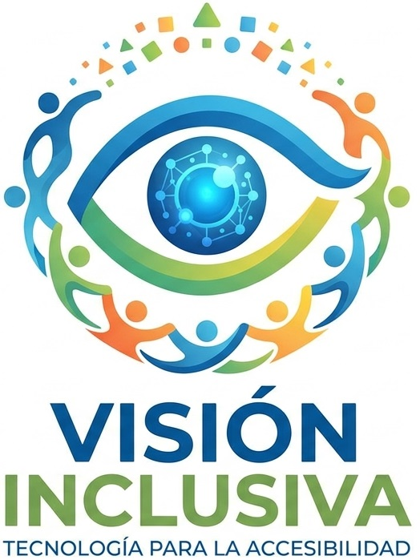
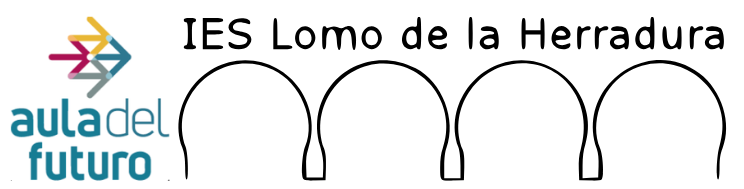
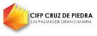
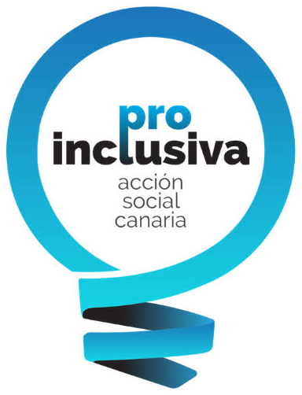

Proyecto de innovación tecnológica · FP Canarias
VisionInclusiva
Eliminación de barreras mediante visión por computador e inteligencia artificial.
Desarrollamos soluciones de software libre que mejoran la autonomía y la integración cotidiana de personas con discapacidad, con prioridad para quienes tienen baja visión o ceguera.

- Modalidad
- Proyecto de innovación tecnológica y científica (Curso de Especialización)
- Familia profesional
- Informática y Comunicaciones
- Periodo de ejecución
- –
El proyecto
Tecnología al servicio de la autonomía
VisionInclusiva es una iniciativa de innovación tecnológica orientada a la transformación digital y la inclusión social mediante inteligencia artificial y visión por computador.
El proyecto une a tres centros de Formación Profesional de Canarias y a una entidad del sector social, lo que garantiza la transferencia de conocimiento y la replicabilidad de las soluciones desarrolladas.
Objetivo general
Diseñar e implementar soluciones tecnológicas basadas en visión por computador para mejorar la calidad de vida y la autonomía de personas con discapacidad visual.
Objetivos específicos
- Diagnosticar necesidades reales de accesibilidad en entornos cotidianos y sanitarios, en colaboración con entidades especializadas.
- Captar, curar y etiquetar datos para el entrenamiento de modelos de inteligencia artificial adaptados.
- Diseñar prototipos físicos e integrar los sistemas de IA en hardware portátil de bajo coste.
- Validar técnicamente las soluciones en condiciones reales, recabando la opinión de las personas usuarias.
- Garantizar la trazabilidad, la replicabilidad y la transferencia mediante documentación técnica detallada y software de código abierto.
- Difundir las actividades y resultados en entornos educativos.
Participantes y entidades colaboradoras
Una alianza entre la FP y el sector social
-

Centro coordinador
IES Lomo de La Herradura
-

Centro colaborador
IES Primero de Mayo
-

Centro colaborador
CIFP Cruz de Piedra
-

Entidad colaboradora
Asociación Pro inclusiva Acción Social Canaria (Pro Inclusiva)
Alineación estratégica
Objetivos de Desarrollo Sostenible y áreas prioritarias
Objetivos de Desarrollo Sostenible (ODS)
- ODS 3Salud y bienestar
- ODS 4Educación de calidad
- ODS 8Trabajo decente y crecimiento económico
- ODS 9Industria, innovación e infraestructura
- ODS 10Reducción de las desigualdades
- ODS 17Alianzas para lograr los objetivos
Áreas prioritarias de innovación
- Transformación digital y tecnologías emergentes.
- Sectores estratégicos para el desarrollo territorial: salud y bienestar.
- Emprendimiento e innovación con impacto económico y social.
- Igualdad, inclusión y reducción de la brecha de género en STEAM.
Plan de trabajo y temporalización
Cinco fases, de septiembre de 2026 a junio de 2027
-
Fase 1 Inicio y coordinación
Septiembre – octubre
- Presentación del proyecto e inicio de la web oficial.
- Reuniones de coordinación y planificación técnica entre todos los participantes.
-
Fase 2 Análisis
Octubre – diciembre
- Identificación del alcance del problema y de las necesidades de las personas usuarias.
- Revisión de publicaciones científicas y del estado del arte en visión por computador.
-
Fase 3 Desarrollo
Diciembre – abril
- Recolección, curado y etiquetado de conjuntos de datos.
- Entrenamiento, optimización y ajuste de parámetros de los modelos de IA.
- Construcción de prototipos portátiles e integración del software en hardware embebido.
- Pruebas preliminares de funcionamiento y reuniones técnicas de seguimiento.
-
Fase 4 Evaluación
Febrero – mayo
- Pruebas de validación en entornos reales con la entidad colaboradora y las personas usuarias.
- Análisis cualitativo y cuantitativo de resultados.
- Elaboración de materiales para foros técnicos y publicaciones científicas.
-
Fase 5 Difusión y transferencia
Mayo – junio
- Publicación de los modelos en repositorios de código abierto.
- Difusión en eventos educativos, jornadas de innovación y artículos científicos.
- Evaluación mediante encuestas de satisfacción y entrega de la memoria final.
Resultados previstos
Lo que dejará el proyecto
Resultados tangibles
- Prototipos funcionales basados en visión por computador que facilitan tareas diarias a personas con discapacidad visual.
- Modelos de inteligencia artificial entrenados, publicados en código abierto para garantizar su uso libre y su replicabilidad.
- Publicaciones en congresos o revistas científicas de impacto.
- Guías técnicas, esquemas de diseño, materiales divulgativos y cuestionarios de impacto cualitativo.
Resultados intangibles
- Capacitación avanzada del profesorado implicado en áreas emergentes como la inteligencia artificial y el Big Data.
- Sensibilización de la comunidad educativa sobre la accesibilidad y la eliminación de barreras.
- Impulso de la interdisciplinariedad entre las familias de Informática, Sanidad y Administración.
- Fomento de vocaciones STEAM, con un enfoque directo en la reducción de la brecha de género.
- Sinergias y alianzas sostenibles entre los centros de Formación Profesional y el sector social.
Difusión y transferencia
Conocimiento abierto y compartido
Estrategias de difusión
- Sitio web del proyecto e integración en los portales institucionales de los centros.
- Publicaciones periódicas en redes sociales con la etiqueta #InnovaFpCan.
- Difusión en medios de comunicación locales y notas informativas.
- Exhibición de soluciones y participación en eventos como Canarias Skills o jornadas de innovación educativa.
Transferencia de conocimiento
- Repositorios de código abierto con los algoritmos y las redes neuronales optimizadas.
- Planos e instrucciones públicas para construir los prototipos físicos.
- Artículos en actas de congresos y revistas científicas con revisión por pares.
Síguenos en redes con #InnovaFpCan